The main impact of oil at $200 a barrel on Poland would be a large drop in GDP of 3.61% by Q16. Equities peak at -5.80% in Q12.
Demand and trade. Consumption peaks at -1.94 % vs baseline in Q16, from -0.68 in Q1 to -1.75 in Q20. Investment peaks at -10.07 % vs baseline in Q9, from -4.69 in Q1 to -6.89 in Q20. Net Exports peaks at -2.35 % vs baseline in Q4, from -1.36 in Q1 to -0.55 in Q20. Gov Spending peaks at +0.71 % vs baseline in Q16, from +0.27 in Q1 to +0.62 in Q20. Gov Debt peaks at +0.00 % vs baseline in Q1, from +0.00 in Q1 to +0.00 in Q20.
External / FX. The real exchange rate shows real depreciation (a weaker, more competitive home currency). Currency Strength peaks at +4.66 % vs baseline in Q3, from +3.25 in Q1 to +2.76 in Q20.
Labour. Employment peaks at -3.86 % vs baseline in Q19, from -0.29 in Q1 to -3.84 in Q20. Unemployment peaks at +1.50 pp in Q18, from +0.14 in Q1 to +1.46 in Q20. Real Wages peaks at -3.58 % vs baseline in Q20, from -0.02 in Q1 to -3.58 in Q20.
Prices. The three-year CPI impulse is +2.48 percentage points. CPI Inflation peaks at +0.55 pp in Q2, from +0.44 in Q1 to -0.21 in Q20. Domestic Infl. peaks at +0.38 pp in Q2, from +0.31 in Q1 to -0.15 in Q20. Marginal Cost peaks at -2.14 % vs baseline in Q16, from -0.82 in Q1 to -1.85 in Q20.
Financial conditions. Policy Rate peaks at +1.92 pp (annualized) in Q5, from +0.59 in Q1 to -1.06 in Q20. Govt 2Y Yield peaks at +1.58 pp (annualized) in Q2, from +1.52 in Q1 to -1.13 in Q20. Govt 5Y Yield peaks at -1.02 pp (annualized) in Q18, from +0.49 in Q1 to -1.01 in Q20. Govt 10Y Yield peaks at -0.81 pp (annualized) in Q15, from -0.25 in Q1 to -0.76 in Q20. Bond Price peaks at -8.02 % vs baseline in Q5, from -2.45 in Q1 to +4.41 in Q20. Equity Index peaks at -5.80 % vs baseline in Q12, from -2.70 in Q1 to -4.52 in Q20. Tobin's Q peaks at -7.05 % vs baseline in Q9, from -3.28 in Q1 to -4.82 in Q20. House Prices peaks at -4.77 % vs baseline in Q20, from -0.17 in Q1 to -4.77 in Q20. Bank Credit peaks at -0.77 % vs baseline in Q18, from -0.06 in Q1 to -0.76 in Q20. Credit Spread peaks at +0.02 pp in Q18, from +0.00 in Q1 to +0.02 in Q20.
Sectoral and capital. Manuf. GDP peaks at -4.74 % vs baseline in Q4, from -3.02 in Q1 to -2.89 in Q20. Services GDP peaks at -2.26 % vs baseline in Q16, from -0.88 in Q1 to -1.95 in Q20. Capital Stock peaks at -0.90 % vs baseline in Q20, from -0.02 in Q1 to -0.90 in Q20.
Timing. By Q20 GDP is still -3.11% from baseline.
These figures are model IRFs versus baseline, not forecasts.
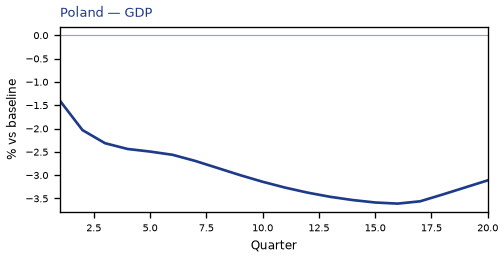
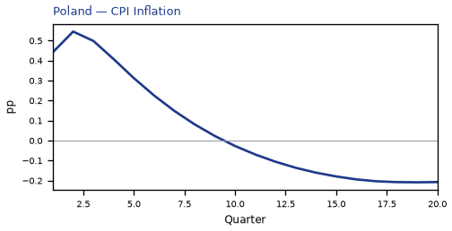
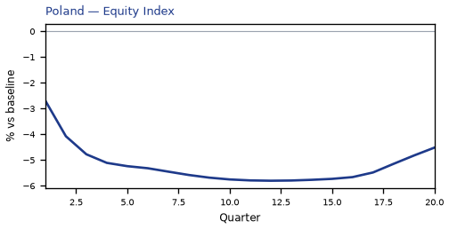
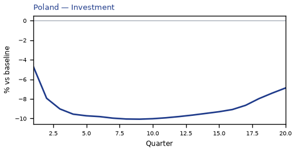
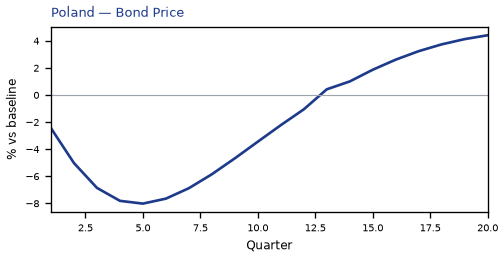
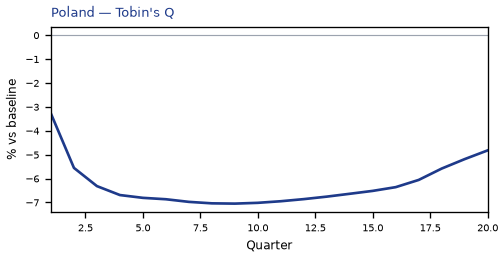
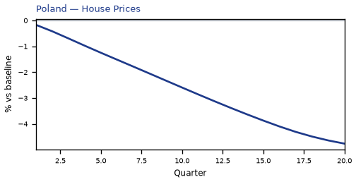
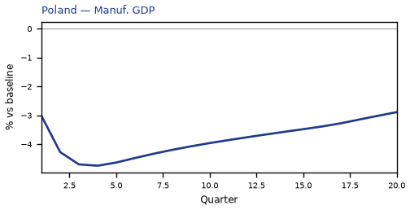
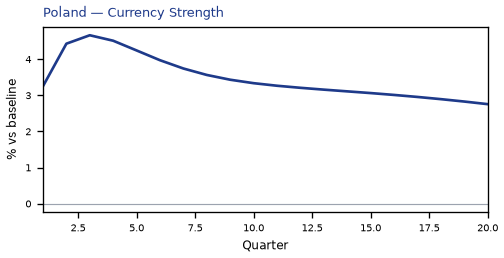
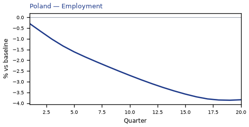
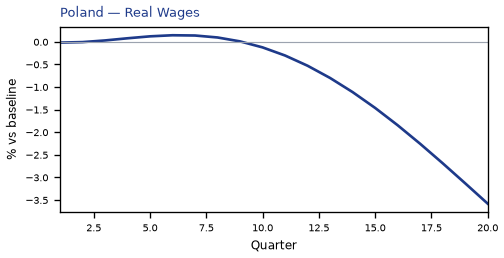
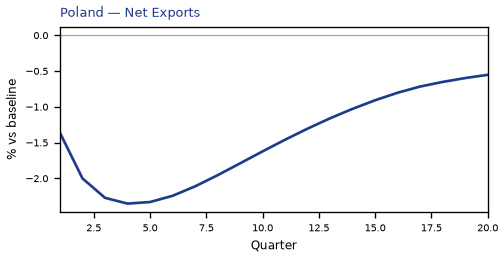
source=live · global_macro_v5 · contract v6 · Q1–Q20 JSON · not financial advice